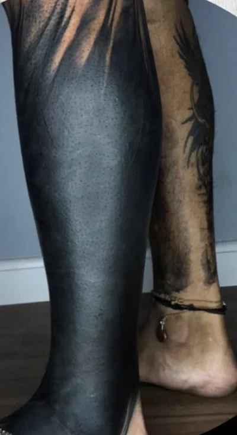

001 Brasília, DF
A pele é
território.
Dark lettering, freehand e composição anatômica em uma linguagem autoral.
Ver tatuagens002 Atlas vivo do traço
Obras
Massas de preto, pontas alongadas e espaços negativos construídos para cada corpo.




003 Desenhos para a pele
Artes disponíveis
Desenhos que podem encontrar o seu corpo. Converse com Pedro para consultar a disponibilidade e o encaixe.


004 Gesto direto
Freehand
O desenho nasce sobre o corpo. Linha, escala e direção respondem à anatomia antes da agulha.


Do gesto à pele
O corpo guia
o desenho.
O traço é construído diretamente sobre a pele, respeitando movimento, proporção e espaço.
Conversar sobre freehand
005 O artista
Pedro
Zenith
Seu trabalho cruza dark tattoo, lettering gótico, referências japonesas, escrita sânscrita e ornamentação sombria. No freehand, cada composição procura ritmo no corpo antes de se tornar tatuagem.
O desenho também se move para outras superfícies, mantendo o contraste, as pontas e os vazios que definem sua linguagem.
“Ainda tenho um universo pra aprender.”Pedro Zenith, em um post sobre sua trajetóriaVer Instagram
006 Formação
Workshop de
tatuagem autoral
Para tatuadores e estudantes que querem aproximar repertório, desenho e encaixe anatômico.
- Identidade e repertório
- Composição e anatomia
- Processo criativo e desenho

007 Conversa direta
Sua próxima marca
Conte sua ideia, a região do corpo e o tamanho aproximado.
Chamar Pedro no WhatsApp 61 98111 0353